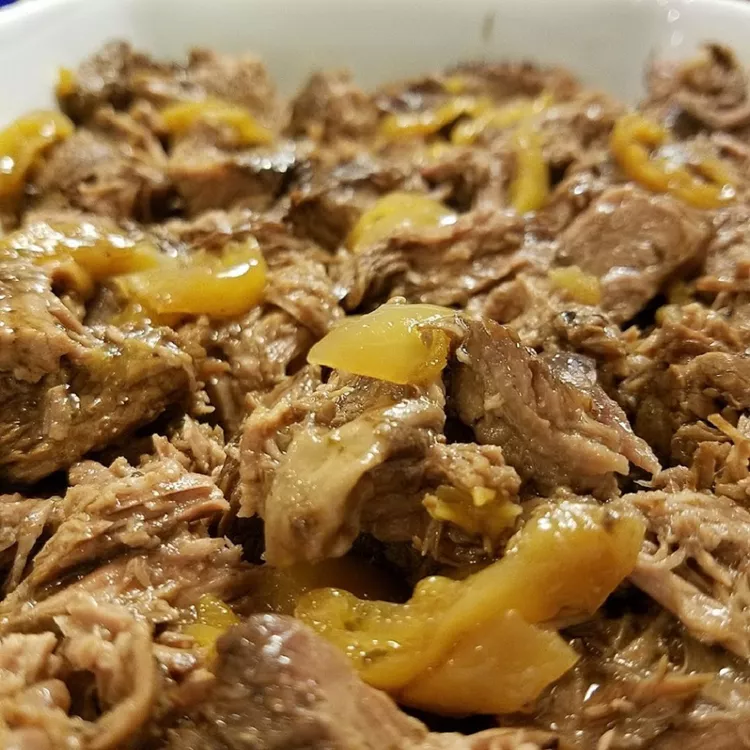

Mississippi Pot Roast

Description
Mississippi pot roast is pot roast flavored with dressing mix and cooked in the slow cooker. This method results in a wonderfully tender and juicy pot roast that's shockingly easy to make.
Ingredients
- 1 (3 pound) chuck roast
- ½ (12 ounce) jar pepperoncini
- ½ (12 ounce) jar pepperoncini juice
- ½ cup unsalted butter
- 1 (1 ounce) packet au jus gravy mix
- 1 (0.4 oz) package buttermilk ranch dressing mix
- salt and ground black pepper to taste
Directions
- Combine chuck roast, pepperoncini, pepperoncini juice, butter, au jus mix, ranch dressing mix, salt, and pepper in a slow cooker. Cover and cook on Low until roast is fork-tender, about 8 hours.
- Remove chuck from slow cooker; shred with 2 forks and serve with gravy.